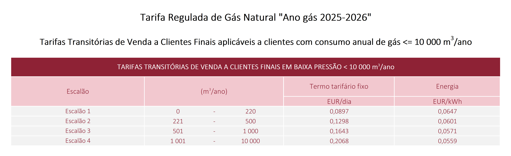

Tarifa Regulada de Gás Natural "Ano gás 2025-2026"
A tarifa regulada de Gás Natural é uma tarifa com preços definidos anualmente pela ERSE, disponível através do chamado Comercializador de Último Recurso (CUR). Embora a maioria dos consumidores domésticos se encontre no mercado livre, a tarifa regulada serve como um importante ponto de referência para o setor.
Consulte na tabela abaixo os preços que vigoram de 01/10/2025 a 30/09/2026.
Compare a Tarifa Regulada com o Mercado Livre
Será que a tarifa regulada é a mais barata para si? Use o simulador para comparar estes preços com todas as ofertas do mercado livre.
Comparar no Simulador